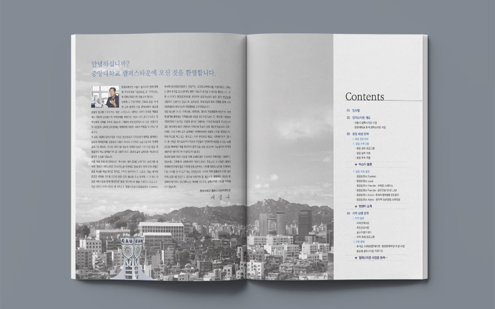

핵심 요약
① 연구성과집은 '성과의 의미 → 근거 데이터 → 과제 목록' 순서로 구성해야 심사위원과 일반 독자가 모두 끝까지 읽습니다.
② 발간등록번호·ISBN·기관 CI 규정·사진 저작권 표기는 초안 단계에서 확인해야 인쇄 직전 수정이 사라집니다.
③ 48~80페이지 기준으로 원고 정리 1주, 디자인 3주, 인쇄·제본 1주, 총 5주를 잡아야 연말 발간을 맞출 수 있습니다.
안녕하세요, 퍼스트디자인 대전지사입니다. 대덕연구단지의 정부출연연구기관과 대학 연구센터는 매년 연구성과집을 발간합니다. 원고는 연구 부서별로 들어오고, 표와 그래프는 부서마다 양식이 다르고, 발간 일정은 늘 연말에 몰립니다. 오늘은 연구성과집을 맡길 업체를 고르기 전에 담당자가 먼저 정리해 두면 좋은 기준을 실제 제작 순서대로 짚어드리겠습니다.
연구성과집은 왜 과제 목록부터 시작하면 안 될까?
연구성과집이 읽히지 않는 가장 큰 이유는 첫 장부터 과제 번호와 과제명이 표로 나열되기 때문입니다. 성과집을 받아 보는 사람은 평가위원, 예산 부처 담당자, 협력 기관, 그리고 기관 홈페이지에서 PDF를 내려받는 일반 독자까지 다양합니다. 이 독자들이 먼저 궁금해하는 것은 '이 기관이 올해 무엇을 바꿨는가'이지 과제 목록이 아닙니다.
그래서 저희는 성과집의 앞부분을 '올해의 대표 성과 5가지'처럼 의미 중심으로 구성하고, 그 뒤에 근거가 되는 수치와 그래프, 마지막에 과제 목록과 논문·특허 목록을 부록으로 배치합니다. 같은 원고라도 순서만 바꾸면 읽는 시간이 절반으로 줄고, 기관장 인사말 다음 장에서 책을 덮는 독자가 눈에 띄게 줄어듭니다.

발간 규정에서 놓치기 쉬운 항목은 무엇일까?
정부출연연구기관과 공공기관의 발간물에는 일반 기업 브로슈어에 없는 규정 항목이 있습니다. 인쇄 직전에 발견하면 판을 다시 잡아야 하는 항목이라, 저희는 초안을 만들기 전에 아래 표를 담당자와 함께 확인합니다.
| 확인 항목 | 확인 시점 | 놓쳤을 때 생기는 일 |
| 발간등록번호 · ISBN | 초안 전 | 판권면 재편집, 인쇄 일정 1주 지연 |
| 기관 CI 색상 · 로고 여백 규정 | 표지 시안 전 | 홍보 부서 반려, 표지 재작업 |
| 사진 · 도판 저작권 표기 | 원고 수합 시 | 배포 후 회수, 재인쇄 비용 발생 |
| 국문 · 영문 기관명 표기 기준 | 원고 수합 시 | 부서별 표기 불일치, 전면 교정 |
특히 사진 저작권은 연구 부서에서 인터넷 이미지를 그대로 원고에 붙여 오는 경우가 많아 반드시 출처를 확인해야 합니다. 출처가 불분명한 이미지는 저희가 도해로 다시 그리거나 촬영팀이 현장에서 새로 찍어 대체합니다.
표와 그래프가 많은 원고는 어떻게 편집할까?
부서별로 들어온 엑셀 표와 파워포인트 그래프를 그대로 붙이면 성과집 전체의 색과 글꼴이 제각각이 됩니다. 저희는 표와 그래프를 전부 다시 그립니다. 표는 열 너비와 정렬 규칙을 통일하고, 그래프는 기관 색상 세 가지 안에서만 색을 쓰며, 단위와 소수점 자릿수를 맞춥니다. 수치가 바뀌는 것이 아니라 보여주는 방식만 통일하는 작업이라 연구 부서의 검수 부담이 크지 않습니다.
또 하나 중요한 것이 '한 페이지에 한 메시지' 원칙입니다. 그래프 하나에 열 개의 계열이 들어가면 아무도 읽지 않습니다. 강조할 계열 하나만 기관 색으로 남기고 나머지는 회색으로 낮추면 같은 데이터로도 성과가 훨씬 또렷하게 보입니다. 이런 편집 기준을 처음부터 정해 두면 이후 연도의 성과집도 같은 틀로 빠르게 만들 수 있습니다.
연말 발간 일정은 어떻게 잡아야 할까?
연구성과집은 대부분 12월에 발간되고, 11월에 원고가 모입니다. 48~80페이지 기준으로 저희가 잡는 표준 일정은 아래와 같습니다.
| 단계 | 기간 | 담당자가 할 일 |
| 원고 수합 · 구조화 | 1주 | 부서별 원고 양식 배포, 대표 성과 선정 |
| 초안 · 전체 디자인 | 3주 | 초안 확인(앞 8페이지), 부서 검수 취합 |
| 인쇄 · 제본 · 납품 | 1주 | 색 교정본 확인, 배포처 수량 확정 |
결재와 내부 심의에 걸리는 시간은 기관마다 달라서, 저희는 초안 확인 시점을 최대한 앞당겨 결재 라인이 실물에 가까운 페이지를 일찍 보게 합니다. 이렇게 하면 마지막 주에 방향이 뒤집히는 일이 거의 없습니다.
자주 묻는 질문
Q. 유성구 정부출연연구기관인데 부서별 원고 양식이 다 달라요. 정리부터 도와주시나요?
A. 네. 첫 미팅에서 성과집 목차를 먼저 정한 뒤 부서별 원고 수합 양식을 만들어 드립니다. 양식에 맞춰 들어온 원고는 저희 기획자가 구조를 맞추고, 표와 그래프는 디자인 단계에서 다시 그립니다.
Q. 대학 연구센터인데 예산이 적어 100부만 인쇄하려고 합니다. 가능한가요?
A. 가능합니다. 100부 이하는 디지털 인쇄로 판비 없이 진행하고, 무선 제본으로 마감합니다. 이후 추가 수량이 필요하면 같은 데이터로 바로 재인쇄할 수 있습니다.
Q. 영문 요약본도 함께 만들 수 있나요?
A. 네. 국문 성과집 확정 후 대표 성과 부분만 추려 영문 요약본을 만드는 경우가 많습니다. 번역은 자체 번역 부서가 진행하고, 국문판과 같은 디자인 틀을 써서 1~2주 안에 납품합니다.
Q. 인쇄 전에 실물을 확인할 수 있나요?
A. 네. 자체 인쇄소에서 색 교정본을 출력해 대전 시내 기관은 직접 가져다 드립니다. 표지 용지와 후가공 샘플도 함께 보여드려 결재 라인에서 실물로 판단하실 수 있게 합니다.
퍼스트디자인 대전지사
대덕연구단지와 정부대전청사, 세종·청주·공주 충청권의 연구기관·바이오 기업·공공기관·제조기업 홍보물을 전담합니다. 기획·디자인·번역·촬영·인쇄를 한 팀에서 처리하고, 자체 인쇄소에서 소량 디지털 인쇄부터 대량 옵셋 인쇄까지 직접 진행합니다. 초안을 먼저 확인받고 진행하는 방식으로 12년간 3,200건 이상을 납품했습니다.
- 12년+편집 디자인 경력
- 3,200+납품 프로젝트
- 98%재의뢰 · 소개
- 400+정부지원사업 수행
대덕연구단지·유성구 연구기관의 연구성과집·연차보고서·백서 제작이 필요하시면 원고가 정리되기 전이라도 편하게 문의해 주세요. 목차와 일정부터 함께 잡아 드립니다. 상담은 1600-9487(평일 09:00~18:00) 또는 work@firstmkt.co.kr로 문의해 주세요. 대전·세종·충청권은 직접 방문 미팅도 가능합니다.